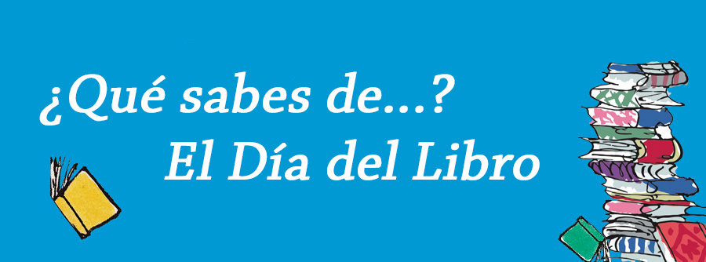

Datos relevantes y curiosos
El Día del Libro es una festividad que nos permite conocer datos curiosos y relevantes que están relacionados con el mundo de los libros y la literatura.

Dia del libro a nivel Internacional
- El Día del Libro se celebra en más de 100 países alrededor del mundo.
- La fecha del 23 de abril no solo conmemora la muerte de William Shakespeare y Miguel de Cervantes, sino también la de otros importantes escritores como el inglés William Wordsworth y el español Garcilaso de la Vega.
- El Día del Libro fue establecido por la UNESCO en 1995.
- La celebración del Día del Libro en algunos países incluye regalar un libro a alguien como símbolo de amistad o amor.
- El libro más vendido de la historia es la Biblia, seguido por el libro de Mao Tse Tung "El libro rojo" y la novela "Don Quijote de la Mancha" de Miguel de Cervantes.
- En el año 2019, el mercado global del libro alcanzó un valor de 122.6 billones de dólares.
- En algunos países, como México y Colombia, el Día del Libro se celebra en septiembre, en honor al nacimiento del escritor mexicano Octavio Paz.
- La UNESCO eligió a la ciudad de Sharjah, en los Emiratos Árabes Unidos, como la Capital Mundial del Libro 2019, por su compromiso con la promoción de la lectura y la literatura.
- En 2011, el presidente de Bolivia, Evo Morales, estableció el Día Nacional del Libro y la Lectura, que se celebra el 21 de abril, en honor al nacimiento del escritor boliviano Franz Tamayo.
- La ciudad de Buenos Aires, Argentina, tiene más librerías per cápita que cualquier otra ciudad del mundo.
- La Biblioteca del Congreso de los Estados Unidos es la biblioteca más grande del mundo, con más de 170 millones de libros, mapas, manuscritos, fotografías y otros documentos.
- En 2019, se publicaron en el mundo 1.863.000 nuevos títulos, siendo China el país que más libros publicó, seguido por Estados Unidos y Reino Unido.
Dia del libro en España
- En España, el Día del Libro se celebra desde 1926, cuando se instauró la Fiesta del Libro Español en conmemoración a la muerte de Cervantes.
- La tradición de regalar un libro y una rosa el día 23 de abril en España comenzó en 1923 en Barcelona, cuando se empezó a celebrar el Día de San Jorge (patrón de Cataluña) y se asoció esta fecha con la literatura y el amor.
- La Feria del Libro de Madrid es una de las más antiguas y grandes de España, y se celebra anualmente en el Parque del Retiro desde 1933.
- En algunas regiones de España, como Galicia y Asturias, se celebra el Día de las Letras Gallegas y el Día de les Lletres Asturianes, respectivamente, en fechas cercanas al 23 de abril para homenajear a sus escritores y escritoras en lenguas vernáculas.
- En la ciudad de Valencia se celebra el día de Sant Jordi (San Jorge en español) con una procesión en la que se saca al santo a la calle, una feria del libro y una exposición de rosas. Además, se celebra la entrada de la primavera.
- La edición más antigua del Quijote se encuentra en la Biblioteca Nacional de España y data del año 1605.
- La Feria del Libro de Madrid es la más importante de España y cuenta con la presencia de alrededor de 400 expositores y unos 2 millones de visitantes cada año.
- El libro más vendido en España en el año 2021 fue "El Laberinto" de Fernando Savater.
- La Real Academia Española se fundó en 1713 con el objetivo de elaborar un diccionario completo de la lengua española.
- El Premio Cervantes, considerado el más importante de la literatura hispana, se concede desde 1976 y ha sido otorgado a escritores como Jorge Luis Borges, Gabriel García Márquez y Mario Vargas Llosa.
- La editorial española Santillana, fundada en 1960, es una de las más importantes del mundo en el ámbito de la educación y la cultura.